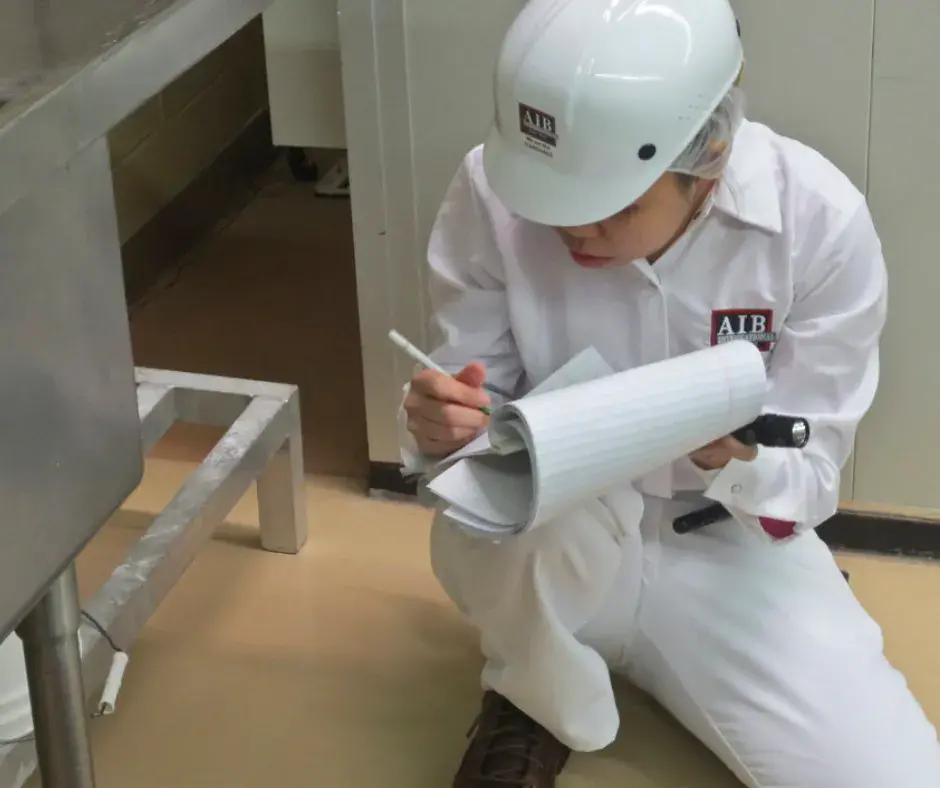
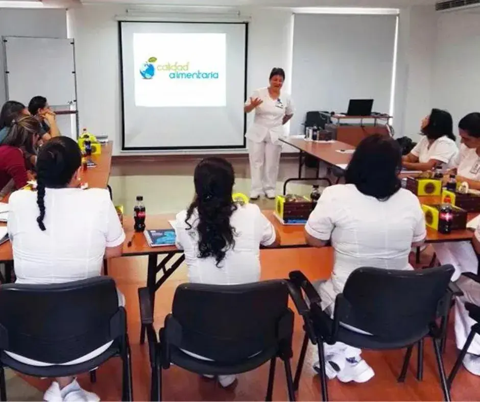

Que hacemos por usted como compañia de aseosorias?
Implementamos sistemas de gestión, capacitamos con talleres, cursos actualizados, trámites ante entidades gubernamentales y auditorías.
implentacion de sistemas de gestion
Gestión de la inocuidad de los alimentos: Buenas prácticas de manufactura (BPM), Procedimientos
operativos estandarizados de saneamiento (POES), Sistema HACCP.
Gestión de la seguridad y salud de los trabajadores: Ley 29783 Ley de seguridad y salud en el
trabajo, reglamento y modificatorias.
Gestión de la seguridad y salud de los trabajadores: Ley 29783 Ley de seguridad y salud en el
trabajo, reglamento y modificatorias.
Gestión de seguimiento de leyes de impacto para la organización.

Auditorias
Inspecciones de condiciones higiénico sanitarias.
Auditoria a proveedores.
Auditoria de diagnóstico.
Inspecciones de seguridad y salud en el trabajo.
Programa de indicadores, seguimiento y medición

Cursos de capacitacion
Buenas prácticas de manufactura.
Análisis de peligros y puntos críticos de control (HACCP).
Regulación sanitaria de los alimentos.
Control de producto no conforme.
Fichas Técnicas.
Registros Sanitarios Nacional e Internacional.
Diseño de tablas nutricionales.
Leyes de impacto en la organización.
Apoyamos es tus Trámites
Registro sanitario Perú, Bolivia y Ecuador.
Desarrollado y preparación de documentos técnicos para levantamiento de observaciones en
trámites en
Digesa.
Apoyo en trámites en el Ministerio de Producción para manejo de residuos sólidos e insumos
Fiscalizados.


 Comunicate aquí
Comunicate aquí